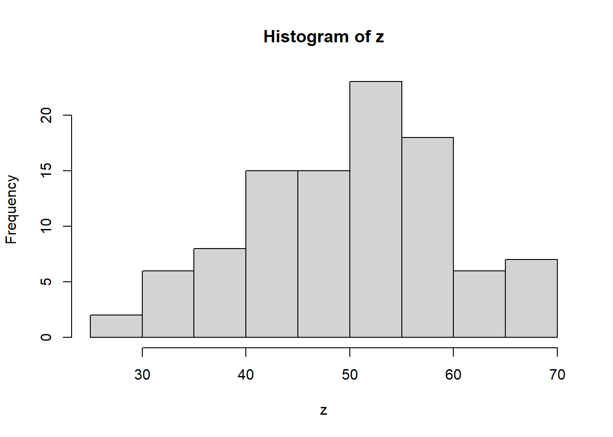

rnorm(20, 50, 10) [1] 52.24114 54.92224 61.84136 44.63717 56.42010 58.45879 55.11178 59.63111
[9] 43.66133 49.10196 66.79374 54.32759 17.56657 47.71284 45.51128 58.21263
[17] 61.97766 64.87036 58.64424 47.92305母集団と標本（サンプル）の考え方を学びます。
例えば、政党の支持率に関するアンケート調査を行うとします。
全有権者に対してアンケートを行うことは効率的でないため、少数の有権者をランダムに選び、調査を行います。
ここで、母集団とは、有権者全体を指し、選ばれた一部のアンケート回答者を標本（サンプル）といいます。
母集団として用いられる確率分布には、正規分布（normal distribution）があります。
正規分布では、山の中心を平均、横幅を標準偏差といいます。
そして、平均や標準偏差のような母集団分布の形状を決める係数をパラメータや母数といいます。
例えば、統計的な表現では、平均が50、標準偏差が10の正規分布をN（50, 10^2）と表現します。 ここで、10^2は標準偏差の２乗である分散を指します。
rnorm(20, 50, 10) [1] 52.24114 54.92224 61.84136 44.63717 56.42010 58.45879 55.11178 59.63111
[9] 43.66133 49.10196 66.79374 54.32759 17.56657 47.71284 45.51128 58.21263
[17] 61.97766 64.87036 58.64424 47.92305curve(dnorm(x, 50, 10), 0, 100)
pnorm(60, 50, 10)[1] 0.8413447z <- rnorm(100, 50, 10)
hist(z)
ggplot2でヒストグラムを作成する場合
library(tidyverse)
z2 <- tibble(value = rnorm(100, 50, 10)) # 列名をvalueとしてデータフレームに格納する
ggplot(
data = z2,
mapping = aes(x = value,
color = "red",
fill = "red")) +
geom_histogram(binwidth = 15, alpha = 0.5)# 最大値を調べる
which.max(z)[1] 34# 平均値を調べる
mean(z)[1] 49.90924# 基本統計量をまとめて計算する
summary(z) Min. 1st Qu. Median Mean 3rd Qu. Max.
27.85 43.39 50.49 49.91 56.84 69.69 sample(): 決められた数の標本をランダムに抽出する関数
# 1から10までの自然数
1:10 [1] 1 2 3 4 5 6 7 8 9 10# ランダムに３つ取り出す
sample(1:10, 3)[1] 8 1 2# 標本zから５個の数字をランダムで取り出す
sample(z, 5)[1] 61.02634 58.32219 50.10817 53.90436 44.13336# 要素が２つしかないものの中から、５つ取り出そうとするためエラーが発生
coin <- c("head", "tail")
sample(coin, 5)Error in sample.int(length(x), size, replace, prob): 'replace = FALSE' なので、母集団以上の大きさの標本は取ることができません# replece = TRUEで復元抽出を行う
sample(coin, 5, replace = TRUE)[1] "tail" "head" "tail" "tail" "tail"母集団（平均50、標準偏差10）から100の標本を作る作業を1000回繰り返して結果を表示します。
S <- 1000
rec <- numeric(S)
for(i in 1:S){
rec[i] <- mean(rnorm(100, 50, 10))
}
summary(rec) Min. 1st Qu. Median Mean 3rd Qu. Max.
47.17 49.33 50.00 49.99 50.63 53.34 標本の大きさを100から10000に増やすと、標本平均は母平均に近づきます。
これが、大数の法則です。
S <- 1000
rec <- numeric(S)
for(i in 1:S){
rec[i] <- mean(rnorm(10000, 50, 10))
}
summary(rec) Min. 1st Qu. Median Mean 3rd Qu. Max.
49.68 49.92 49.99 49.99 50.06 50.37 サイコロでの検証
# サイコロの期待値
sai <- c(1:6) * 1/6
sum(sai)[1] 3.5# サイコロを10回振る
sample(1:6, 10, replace = TRUE) [1] 5 3 6 4 4 2 3 1 1 2# サイコロを1000回振る
mean(sample(1:6, 1000, replace = TRUE))[1] 3.456もう少し詳しく調べる場合
# サイコロを10回振る
S <- 1000
rec <- numeric(S)
for(i in 1:S){
rec[i] = mean(sample(1:6, 10, replace = TRUE))
}
summary(rec) Min. 1st Qu. Median Mean 3rd Qu. Max.
1.700 3.200 3.500 3.514 3.900 5.000 # サイコロを1000回振る
S <- 1000
rec <- numeric(S)
for(i in 1:S){
rec[i] = mean(sample(1:6, 1000, replace = TRUE))
}
summary(rec) Min. 1st Qu. Median Mean 3rd Qu. Max.
3.348 3.463 3.501 3.500 3.536 3.677 分散は、標本が平均値を中心にどれだけ散らばっているかを示す指標です。
また、標準偏差は、分散の平方根をとったものです。
x <- rnorm(1000, 50, 10)
# 分散
var(x)[1] 101.6705# 標準偏差
sd(x)[1] 10.08318標準偏差は最小値から最大値の範囲に収まっており、母集団の標準偏差10の周りに集まっていることがわかる。
# 検証
set.seed(123)
S <- 1000
n <- 1000
rec <- numeric(S)
for(i in 1:S){
rec[i] <- sd(rnorm(n, 50, 10))
}
summary(rec) Min. 1st Qu. Median Mean 3rd Qu. Max.
9.284 9.857 9.998 9.997 10.142 10.614 相関係数は、変数間の関係を表す指標で－1から１の範囲の値をとります。
共分散は、2つの変数の間の関係の強さと方向を示す指標です。
共分散が正の場合、片方の変数が増加するともう片方も増加する傾向があります。
逆に、共分散が負の場合、片方の変数が増加するともう片方は減少する傾向があります。
x = rnorm(100, 50, 10)
y = rnorm(100, 50, 10)
plot(x, y)# 相関係数を確認
cor(x, y)[1] 0.08319041# 共分散を確認
cov(x, y)[1] 8.023902z = (x + y) / 2
plot(x, z)# 相関係数を確認
cor(x, z)[1] 0.762546# 共分散を確認
cov(x, z)[1] 56.64745# runif(n, min = 0, max = 1)
x <- runif(100)
mean(x)[1] 0.4841557var(x)[1] 0.08311897sd(x)[1] 0.2883036summary(x) Min. 1st Qu. Median Mean 3rd Qu. Max.
0.002218 0.227379 0.472057 0.484156 0.742593 0.978966 1000の標本を抽出する場合の標本平均を確認します。
S <- 1000
n <- 1000
rec <- numeric(S)
for(i in 1:S){
rec[i] <- mean(runif(n))
}
summary(x) Min. 1st Qu. Median Mean 3rd Qu. Max.
0.002218 0.227379 0.472057 0.484156 0.742593 0.978966 n <- 100
x <- runif(n)
y <- rnorm(n, 0, 1)
z <- 1.3 * x - 0.7 * y散布図を表示して確認します。 - par(): プロットの設定を変更する関数。mfrow引数でパネルを１行３列に分割
# 1行3列に分割
par(mfrow = c(1, 3))
plot(x, y)
plot(y, z)
plot(x, z)# 1行1列に戻す
par(mfrow = c(1, 1)) 相関係数を確認します。 - cbind(): 複数のベクトルをまとめる関数 - data.frame(): データフレームに変換する関数
w <- cbind(x, y, z)
cor(w) x y z
x 1.0000000 0.0201443 0.4507630
y 0.0201443 1.0000000 -0.8833823
z 0.4507630 -0.8833823 1.0000000plot(data.frame(x, y, z))